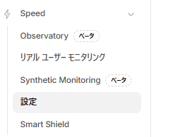
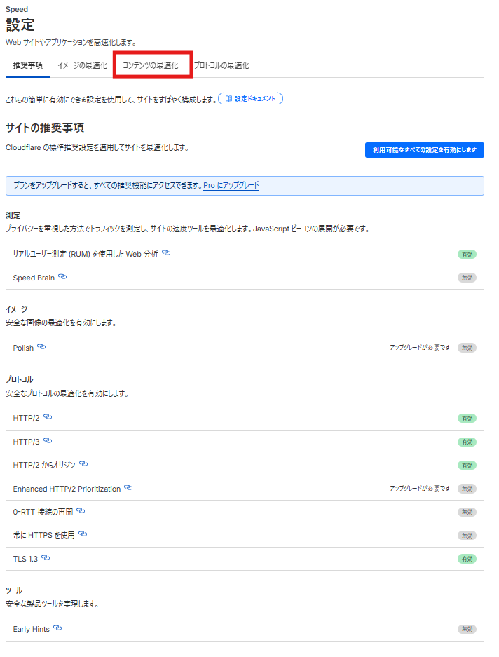
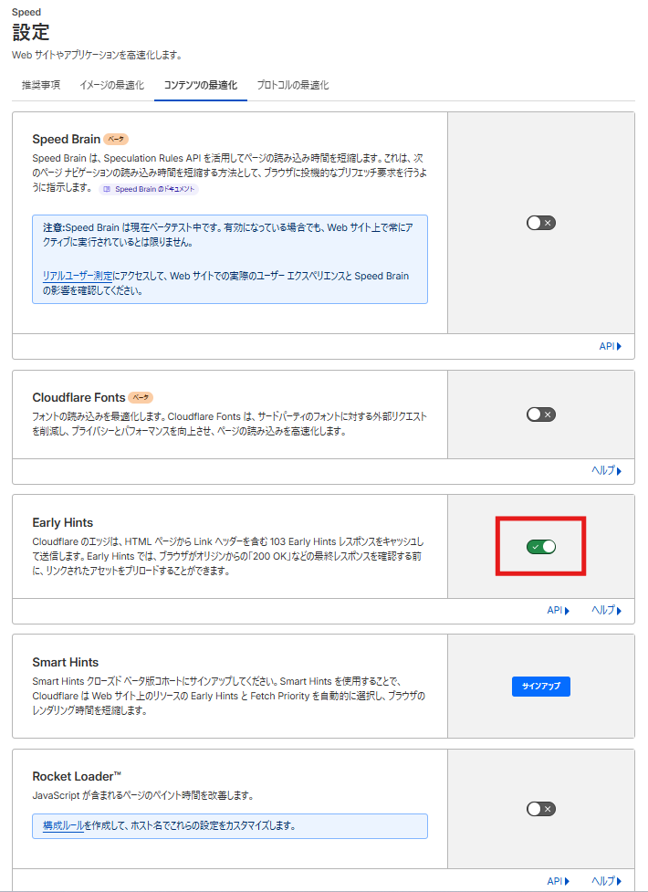
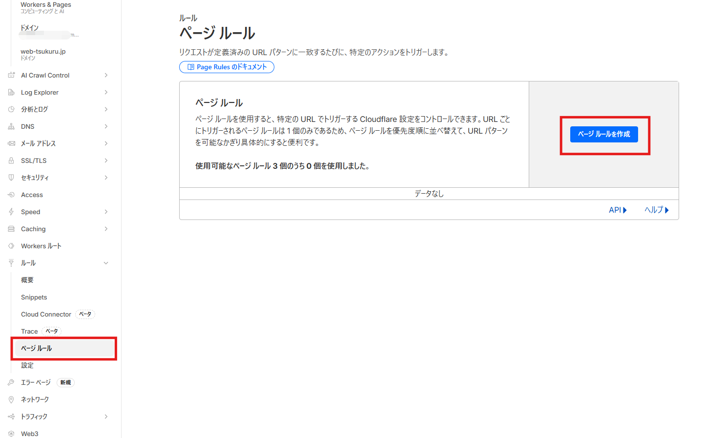
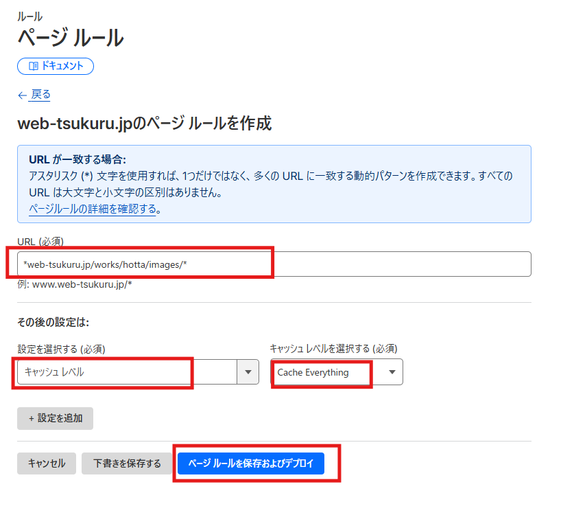
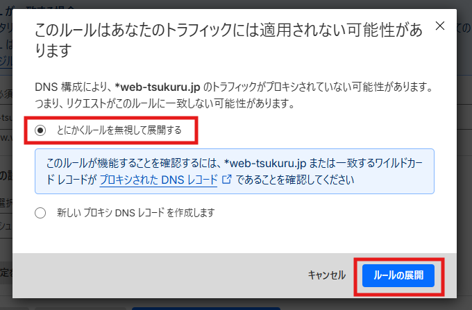
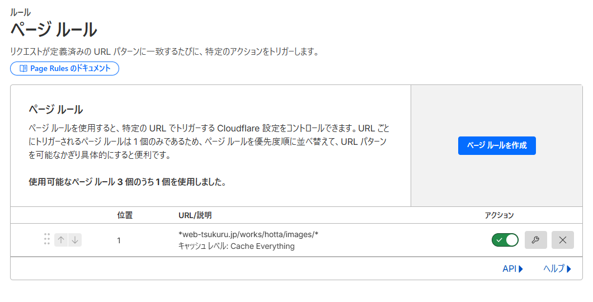
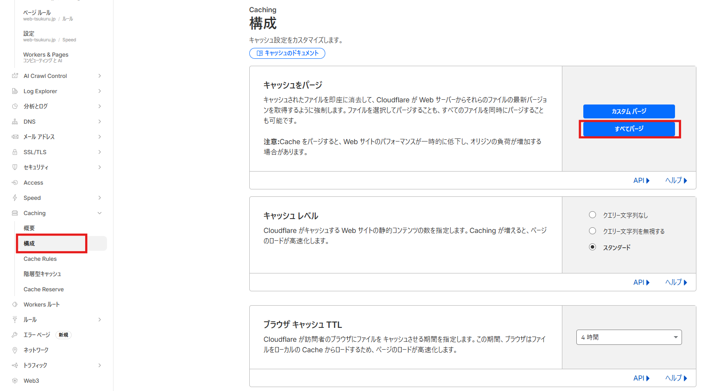
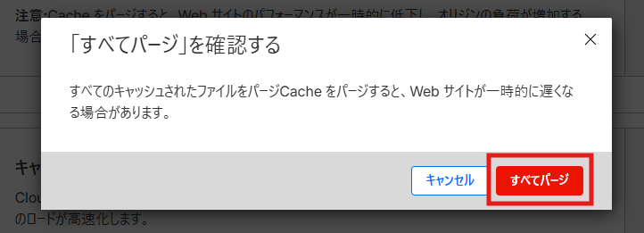

🎯 このガイドの目的
Cloudflareの設定を最適化して、モバイルスコアを10-20点向上させます。
特に、キャッシュ設定とEarly Hintsの有効化により、FCP/LCPを大幅に短縮します。
効果
| 指標 | 改善前 | 改善後 | 削減量 |
|---|---|---|---|
| FCP/LCP | 10.9秒 | 2-4秒 | -6-8秒 |
| モバイルスコア | 55点 | 70-80点 | +15-25点 |
設定手順（所要時間: 20-30分）
1. Cloudflareダッシュボードにログイン
-
Cloudflareにアクセス
https://dash.cloudflare.com/ にアクセス -
ドメインを選択
web-tsukuru.jpドメインをクリック
2. Early Hintsを有効化
-
Speedメニューをクリック
左側のメニューから「Speed」→「設定」を選択
-
コンテンツの最適化タブ
上部の「コンテンツの最適化」タブをクリック
-
Early HintsをON
「Early Hints」のトグルスイッチをONにする
✅ 効果: ブラウザがリソースを先読みして高速化
3. Page Rules（最重要）
Page Rulesで画像ファイルをキャッシュすると、最も大きな効果が得られます。
-
Page Rulesメニューを開く
左側メニュー「Rules」→「ページルール」をクリック -
新規ルール作成
「ページルールを作成」ボタンをクリック
-
URLパターンを入力
「URL（必須）」欄に以下を入力：
*web-tsukuru.jp/works/hotta/images/*
-
キャッシュレベルを設定
- 「設定を選択する」ドロップダウンをクリック
- 「キャッシュレベル」を選択
- 右側のドロップダウンで「Cache Everything」を選択
⚠️ 警告が表示されます: 「このルールはあなたのトラフィックには適用されない可能性があります」
→ 「とにかくルールを無視して展開する」を選択してOK
-
ルールを保存
「ページルールを保存およびデプロイ」ボタンをクリック -
完了確認
Page Rules一覧に新しいルールが表示され、緑色のトグルがONになっていればOK
4. キャッシュをクリア（必須）
設定変更後は必ずキャッシュをクリアしてください。古いキャッシュが残っていると効果が見えません。
-
Cachingメニューを開く
左側メニュー「Caching」→「構成」をクリック -
すべてパージをクリック
右上の青いボタン「すべてパージ」をクリック
-
確認画面で実行
「すべてのキャッシュされたファイルをパージすると、Webサイトが一時的に遅くなる場合があります」という警告が表示されます。
→ 「すべてパージ」をクリック
💡 注意: パージ直後は一時的にサイトが遅くなりますが、すぐにキャッシュが再構築されて高速化されます。
検証手順
1. 5-10分待つ
設定が世界中のCloudflareエッジサーバーに反映されるまで待ちます。
2. ブラウザキャッシュをクリア
Chrome: Ctrl + Shift + Del → キャッシュをクリア
3. PageSpeed Insights再計測
https://pagespeed.web.dev/ で再度計測
4. 期待される改善
- FCP/LCP: 10.9秒 → 2-4秒
- モバイルスコア: 56点 → 70-80点
トラブルシューティング
| 症状 | 対処法 |
|---|---|
| 改善が見られない |
1. キャッシュパージを再実行 2. ブラウザのシークレットモードで再テスト 3. 10分以上待ってから再計測 |
| 画面が真っ白になった |
Page Ruleを一時的にOFFにする （Page Rules画面でトグルをクリック） |
| 画像が表示されない |
URLパターンが正しいか確認*web-tsukuru.jp/works/hotta/images/*
|
✅ 最重要ポイント TOP 3
- Page Rules（Cache Everything） — 最も効果的
- キャッシュクリア — 設定後は必ず実施
- Early Hints — ONにするだけで高速化
📊 効果実績
堀田建設LP:
- モバイルスコア: 55点 → 56点（+1点）※コード最適化のみ
- Cloudflare最適化後の期待値: 70-80点